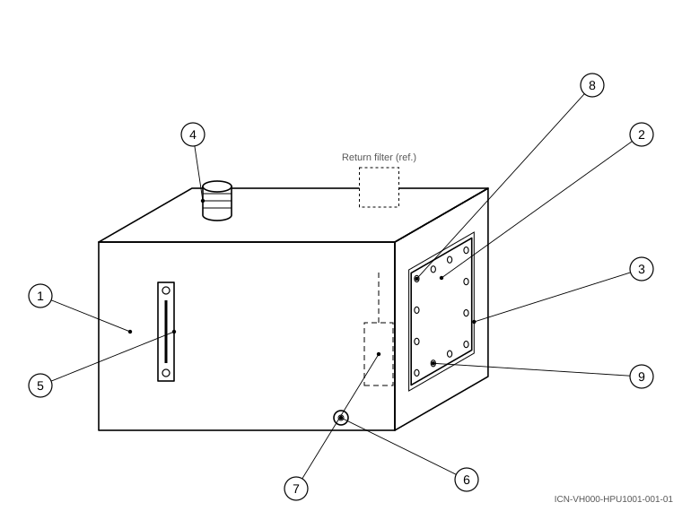

Issue 000-01 · 2026-11-20 · Varnholt VH-15 hydraulic power unit (fictional)
General
The reservoir holds the hydraulic oil for the unit. It also lets air come out of the oil, and it lets heat go out through the tank walls.
The reservoir is a welded steel tank with a capacity of 60 L. The oil volume at the maximum level is 50 L.
Components
The figure shows the components. The item numbers refer to the figure.

Figure 1. ReservoirICN-VH000-HPU1001-001-01
Filler-breather cap (item 4, VH15-1004), on the top of the tank. The cap has a 10 micrometer air filter and a filler strainer.
Level-temperature gauge (item 5, VH15-1005), on the front wall. The gauge shows the oil level and the oil temperature.
Magnetic drain plug (item 6, VH15-1006), at the lowest point of the tank. The magnet collects steel particles from the oil.
Suction strainer (item 7, VH15-1007), inside the tank on the pump suction port. The strainer stops particles of 125 micrometers and larger.
Clean-out cover (item 2, VH15-1002) and gasket (item 3, VH15-1003), on the side wall. The cover gives access to the suction strainer and to the inside of the tank.